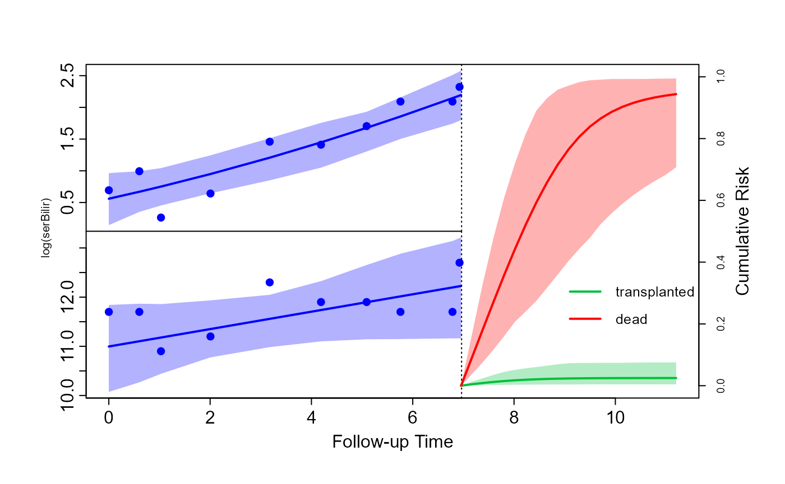

Competing Risks
Dimitris Rizopoulos
2025-08-23
Source:vignettes/Competing_Risks.Rmd
Competing_Risks.RmdCompeting Risks
Prepare data
The first step in fitting a joint model for competing events in
JMbayes2 is to prepare the data for the event process.
If there are K competing events, each
subject must have K rows, one for each
possible cause. The observed event time T_i of each subject is repeated K times, and there are two indicator
variables, namely one identifying the cause and one indicating whether
the corresponding event type is the one that occurred. Standard survival
datasets that include a single row per patient can be easily transformed
to the competing risks long format using the function
crisk_setup(). This function accepts as main arguments the
survival data in the standard format with a single row per patient, the
name of the status variable, and the level in this status variable that
corresponds to censoring. We illustrate the use of this function in the
PBC data, where we treat as competing risks transplantation and
death:
pbc2.id[pbc2.id$id %in% c(1, 2, 5), c("id", "years", "status")]
#> id years status
#> 1 1 1.095170 dead
#> 2 2 14.152338 alive
#> 5 5 4.120578 transplanted
pbc2.idCR <- crisk_setup(pbc2.id, statusVar = "status", censLevel = "alive",
nameStrata = "CR")
pbc2.idCR[pbc2.idCR$id %in% c(1, 2, 5),
c("id", "years", "status", "status2", "CR")]
#> id years status status2 CR
#> 1 1 1.095170 dead 1 dead
#> 1.1 1 1.095170 dead 0 transplanted
#> 2 2 14.152338 alive 0 dead
#> 2.1 2 14.152338 alive 0 transplanted
#> 5 5 4.120578 transplanted 0 dead
#> 5.1 5 4.120578 transplanted 1 transplantedNote that each patient is now represented by two rows (we have two
possible causes of discontinuation from the study, death, and
transplantation), the event time variable years is
identical in both rows of each patient, variable CR denotes
the cause for the specific line of the long dataset, and variable
status2 equals 1 if the corresponding event occurred.
Fit models
For the event process, we specify cause-specific relative risk
models. Using dataset pbc2.idCR, we fit the corresponding
cause-specific Cox regressions by including the interaction terms of age
and treatment with variable CR, which is treated as a
stratification variable using the strata() function:
CoxFit_CR <- coxph(Surv(years, status2) ~ (age + drug) * strata(CR),
data = pbc2.idCR)We include two longitudinal outcomes for the longitudinal process: serum bilirubin and the prothrombin time. For the former, we use quadratic orthogonal polynomials in the fixed- and random-effects parts, and for the latter, linear evolutions:
fm1 <- lme(log(serBilir) ~ poly(year, 2) * drug, data = pbc2,
random = ~ poly(year, 2) | id)
fm2 <- lme(prothrombin ~ year * drug, data = pbc2, random = ~ year | id)To specify that each longitudinal outcome has a separate association coefficient per competing risk, we define the corresponding functional forms:
CR_forms <- list(
"log(serBilir)" = ~ value(log(serBilir)):CR,
"prothrombin" = ~ value(prothrombin):CR
)Finally, the competing risks joint model is fitted with the following
call to jm() (due to the complexity of the model, we have
increased the number of MCMC iterations and the burn-in period per
chain):
jFit_CR <- jm(CoxFit_CR, list(fm1, fm2), time_var = "year",
functional_forms = CR_forms,
n_iter = 25000L, n_burnin = 5000L, n_thin = 5L)
summary(jFit_CR)
#>
#> Call:
#> jm(Surv_object = CoxFit_CR, Mixed_objects = list(fm1, fm2), time_var = "year",
#> functional_forms = CR_forms, n_iter = 25000L, n_burnin = 5000L,
#> n_thin = 5L)
#>
#> Data Descriptives:
#> Number of Groups: 312 Number of events: 169 (27.1%)
#> Number of Observations:
#> log(serBilir): 1945
#> prothrombin: 1945
#>
#> DIC WAIC LPML
#> marginal 10813.89 11466.26 -6444.559
#> conditional 15750.73 15437.04 -8238.648
#>
#> Random-effects covariance matrix:
#>
#> StdDev Corr
#> (Intr) 1.3444 (Intr) p(,2)1 p(,2)2 (Intr)
#> p(,2)1 23.2294 0.7027
#> p(,2)2 12.3415 -0.2648 -0.1463
#> (Intr) 0.7859 0.6353 0.4396 -0.3296
#> year 0.3274 0.4330 0.3402 -0.0527 0.0339
#>
#> Survival Outcome:
#> Mean StDev 2.5% 97.5% P
#> age -0.0750 0.0245 -0.1247 -0.0286 0.0007
#> drugD-penicil -0.2699 0.4003 -1.0821 0.5001 0.4993
#> age:strata(CR)dead 0.1376 0.0240 0.0922 0.1868 0.0000
#> drugD-penicil:strata(CR)dead 0.2650 0.4329 -0.5594 1.1367 0.5497
#> value(log(serBilir)):CRtransplanted 1.0270 0.2180 0.6150 1.4722 0.0000
#> value(log(serBilir)):CRdead 1.4521 0.1138 1.2378 1.6872 0.0000
#> value(prothrombin):CRtransplanted 0.1003 0.1408 -0.1837 0.3599 0.5048
#> value(prothrombin):CRdead 0.1444 0.0481 0.0448 0.2306 0.0092
#> Rhat
#> age 1.0533
#> drugD-penicil 1.0394
#> age:strata(CR)dead 1.0885
#> drugD-penicil:strata(CR)dead 1.0407
#> value(log(serBilir)):CRtransplanted 1.0082
#> value(log(serBilir)):CRdead 1.0180
#> value(prothrombin):CRtransplanted 1.0679
#> value(prothrombin):CRdead 1.0233
#>
#> Longitudinal Outcome: log(serBilir) (family = gaussian, link = identity)
#> Mean StDev 2.5% 97.5% P Rhat
#> (Intercept) 1.1970 0.1139 0.9742 1.4210 0.0000 1.0008
#> poly(year, 2)1 27.8727 2.9854 22.0478 33.9114 0.0000 1.0112
#> poly(year, 2)2 1.2406 1.7122 -2.1576 4.5335 0.4642 1.0083
#> drugD-penicil -0.1908 0.1581 -0.4991 0.1205 0.2217 1.0003
#> p(,2)1 -3.1948 3.5724 -10.1371 3.7562 0.3732 1.0021
#> p(,2)2 -1.0633 2.1598 -5.2556 3.2097 0.6105 1.0025
#> sigma 0.3023 0.0062 0.2903 0.3147 0.0000 1.0001
#>
#> Longitudinal Outcome: prothrombin (family = gaussian, link = identity)
#> Mean StDev 2.5% 97.5% P Rhat
#> (Intercept) 10.6336 0.0832 10.4737 10.7987 0.0000 1.0013
#> year 0.2944 0.0396 0.2170 0.3737 0.0000 1.0014
#> drugD-penicil -0.0970 0.1170 -0.3266 0.1296 0.4068 1.0004
#> year:drugD-penicil -0.0234 0.0520 -0.1257 0.0786 0.6572 1.0000
#> sigma 1.0554 0.0203 1.0166 1.0967 0.0000 1.0012
#>
#> MCMC summary:
#> chains: 3
#> iterations per chain: 25000
#> burn-in per chain: 5000
#> thinning: 5
#> time: 6.6 minDynamic predictions
Based on the fitted competing risks joint model, we will illustrate how (dynamic) predictions can be calculated for the cause-specific cumulative risk probabilities. As an example, we will show these calculations for Patient 81 from the PBC dataset. First, we extract the data on this subject.
ND_long <- pbc2[pbc2$id == 81, ]
ND_event <- pbc2.idCR[pbc2.idCR$id == 81, ]
ND_event$status2 <- 0
ND <- list(newdataL = ND_long, newdataE = ND_event)The first line extracts the longitudinal measurements, and the second
line extracts the event times per cause (i.e., death and
transplantation). This patient died at 6.95 years, but to make the
calculation of cause-specific cumulative risk more relevant, we presume
that she did not have the event, and we set the event status variable
status2 to zero. The last line combines the two datasets in
a list. Note: this last step is a prerequisite from the
predict() method for competing risks joint model. That is,
the datasets provided in the arguments newdata and
newdata2 need to be named lists with two components. The
first component needs to be named newdataL and contain the
dataset with the longitudinal measurements. The second component needs
to be named newdataE and contain the dataset with the event
information.
The predictions are calculated using the predict()
method. The first call to this function calculates the prediction for
the longitudinal outcomes at the times provided in the
times argument, and the second call calculates the
cause-specific cumulative risk probabilities. By setting the argument
return_newdata to TRUE in both calls, we can
use the corresponding plot() method to depict the
predictions:
predLong <- predict(jFit_CR, newdata = ND, return_newdata = TRUE,
times = seq(6.5, 15, length = 25))
predEvent <- predict(jFit_CR, newdata = ND, return_newdata = TRUE,
process = "event")
plot(predLong, predEvent, outcomes = 1:2, ylim_long_outcome_range = FALSE,
col_line_event = c("#03BF3D", "#FF0000"),
fill_CI_event = c("#03BF3D4D", "#FF00004D"), pos_ylab_long = c(1.5, 11.5))
legend(x = 8.1, y = 0.45, legend = levels(pbc2.idCR$CR),
lty = 1, lwd = 2, col = c("#03BF3D", "#FF0000"), bty = "n", cex = 0.8)